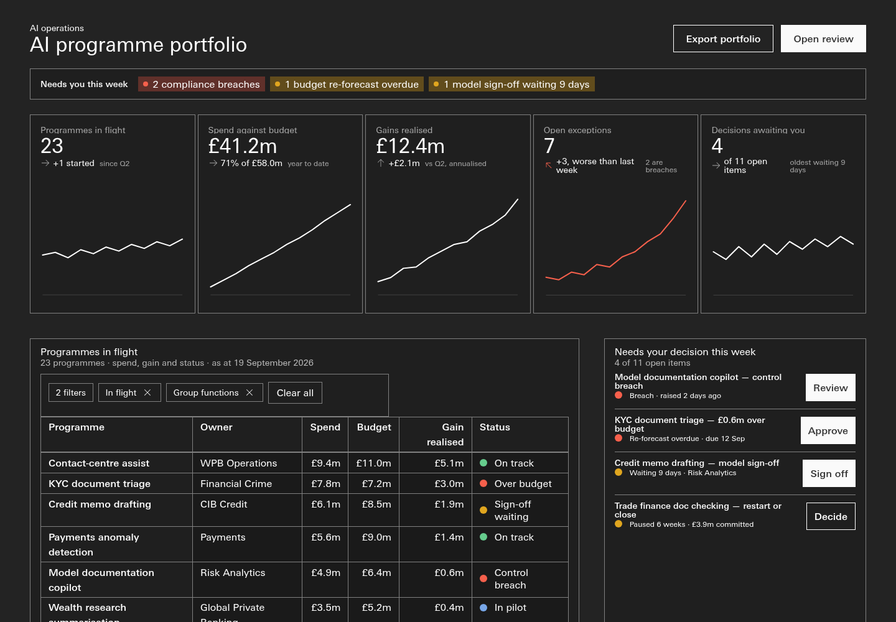
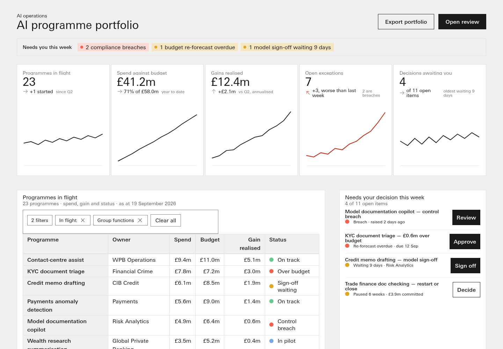

Apollo eval harness r4c-1.0 · #304 R4c · profile generic-dashboard
#288 P composed probe
extra baseline: #288 P probe, template fenced (AI-ops prompt, repo canon) · page notes/_lanes/288/P/composed-dashboard.html · pack Apollo-Spider-v1.0.13.zip
mechanical total 4 / 12 geometry (4b) 0 / 3
The four-part rubric, measured
Visually rich
3
12 distinct Apollo components; 2 charts rendered with marks (2 types: grouped-column, line); 0 clipped
hand-rubric equivalent · 1: >=4 components or >=1 rendered chart · 2: >=8 comps and a rendered chart · 3: >=12 comps, a rendered chart, 0 clipped
Full
1
views live 1 (no list asked); largest record set 7 rows → coverage 0.31
mean of the coverage parts: >=0.30 → 1, >=0.60 → 2, >=0.85 → 3
Persistent
0
survived reload: none (of changed: none; storage keys 0; url after <entry>)
count of families {nav/view, filter, theme, sort, search} whose changed state survived a reload, capped at 3
Interactive
0
0/17 driven controls changed the page (0%); live families 0: none; dead: approve, detail, export, filter, form, other; page errors 0
1: >=30% live or >=2 families · 2: >=60% and >=5 families · 3: >=85%, >=8 families, 0 page errors
Composed or traced
COMPOSED nearest template Template-dashboard-bento, trace index 0.041
| DOM shingle containment | template text reused | template-only classes present |
|---|
| 0.0 | 0.0 (0 of 21 strings) | 0.136 c-bento, c-bento__grid, c-bento__tile |
trace_index = 0.4*DOM shingle containment + 0.3*template text reuse + 0.3*template-only classes present; >=0.30 TRACED, >=0.15 PARTLY TRACED, else COMPOSED — calibrated on pages whose provenance the record states (7 bento-first splices read 0.334-0.561; 2 template-closed compositions read 0.041)
Theme — asked: None
n/a (profile asks no theme)
| root | class=True data-apollo-theme=None data-theme=light |
| raw hex in authored CSS | 0 |
Charts against the ask
| rendered | 2 |
| declared static | 2 |
| on overview | 2 |
| min overview asked | 1 |
| types rendered | ['grouped-column', 'line'] |
| pack types available | 14 |
| types used frac | 0.14 |
| with legend | 1 |
| with table | 2 |
| subpages with charts | 0 |
| clipped charts | none |
| tooltips on hover | {'charts_hovered': 2, 'tooltip_shown': 1} |
Component variety — 12 distinct
button, card-header-lockup, chart-bar, chart-line, eyebrow, kpi-tile, legend, list-items, page-header-lockup, status-indicator, table, tags
pages scored: 1 · APOLLO-DEMO markers copied: 0
Geometry and own size (4b's gates)
| geometry | FINDINGS | score 0 · findings 78 | knowledge/_validate_geometry.py |
| G1b minor @1440 — div.c-bento__grid |
| G3 minor @1440 — 'Programmes in flight 23 programmes · spend, gain' and 'Spend against budget · top six programmes, £m ye' |
| G5 minor @1440 — div.filterbar above table.tile-table (Programmes in flight 23 programmes · spe) |
| G6 minor @1440 — 'Programmes in flight 23 programmes · spend, gain' (882.7x680) |
| G6 minor @1440 — 'Needs your decision this week 4 of 11 open items' (421.3x680) |
| G6 minor @1440 — 'Programmes in flight 23 +1 startedsince Q2' (265.6x320) |
| G6 minor @1440 — 'Spend against budget £41.2m 71% of £58.0myear to' (265.6x320) |
| G6 minor @1440 — 'Gains realised £12.4m +£2.1mvs Q2, annualised' (265.6x320) |
| own_size | FINDINGS | score None · findings 21 | knowledge/_validate_own_size.py |
| S2 None @1440 — None |
| S2 None @1440 — None |
| S2 None @1440 — None |
| S2 None @1440 — None |
| S1 None @1440 — None |
| S1 None @1440 — None |
| S1 None @1440 — None |
| S1 None @1440 — None |
Harness-native geometry signals (advisory, NOT 4b's score): {"dead_tiles": 1, "filter_table_mismatch": 0, "grids": 3, "own_size_hint": {"button_h_median": 44, "button_h_min": 17, "buttons": 15, "th": 30, "th_h_median": 18, "th_h_min": 18}, "unequal_gutter_grids": 0, "unshared_bottom_rows": 1}
Accessibility findings
{"controls": 22, "duplicate_ids": 0, "h1": 1, "heading_skips": 0, "img_no_alt": 0, "landmarks": {"main": 0, "nav": 1}, "lang": "en", "small_targets": 7, "unnamed_controls": 0}
pack gate: - a11y: ✅
The pack's own gates
| screen gate | PASS |
| dataviz gate | {'verdict': 'PASS', 'charts': 2, 'blocking_n': 0, 'advisory_n': 0, 'blocking': []} |
- receipt: ✅ 0 region(s) re-hashed and matched- compose: ✅- composition: UNPROVEN: C9 bands- icon-source: ✅ all paths library-matched- a11y: ✅
Render
HSBC face: {'families': ['HSBC_MtUnivers_Latin', 'HSBC_MtUnivers_Latin Medium'], 'hsbc': True, 'nodes': {"[class*='t-cm-']": ['HSBC_MtUnivers_Latin'], 'body': [], 'button': ['HSBC_MtUnivers_Latin Medium'], 'h1': ['HSBC_MtUnivers_Latin'], 'h2': ['HSBC_MtUnivers_Latin'], 'td': ['HSBC_MtUnivers_Latin']}} · horizontal overflow: 0 px · page errors: 0 · console errors: 0 · clipped elements: 0 · sub-pages probed: 0

dark-1440
light-1440Left to judgment — for Dave's eye, not scored
- Taste: does the page look like Apollo at its best — hierarchy, rhythm, restraint (Dave's eye on the light/dark shots).
- Alignment and spacing that the geometry signals cannot name (optical alignment, crowding, the 'sloppiness class' of #288).
- Whether each chart is the RIGHT chart for its figure (form-to-question fit), not only present and rendered.
- Data believability: realistic entities, currencies, FX and magnitudes for a CEO audience.
- Whether the overview actually answers the three CEO questions, as read by a person, not by keyword.
- Whether each workflow (approve, acknowledge, service request) is plausible end to end, beyond 'the DOM changed'.
- Composed vs traced is MEASURED as similarity; whether the composition is GOOD composition is judgment.
Reproduce
python3 notes/_lanes/304/R4c/harness/score.py static --run-id tr-288P
python3 notes/_lanes/304/R4c/harness/score.py gates --run-id tr-288P
python3 notes/_lanes/304/R4c/harness/score.py render --run-id tr-288P
python3 notes/_lanes/304/R4c/harness/score.py drive --run-id tr-288P
python3 notes/_lanes/304/R4c/harness/score.py ext --run-id tr-288P
python3 notes/_lanes/304/R4c/harness/score.py card --run-id tr-288P
page sha256 855e2c0fb864084c117bdea19a063f45b8a154c59d7743ced334a99e6f7326ec · pack sha256 5d4df132b1f57f1764736d6bf46d3260bb7b7d0393a8317ea11c8f6b8bb282c6